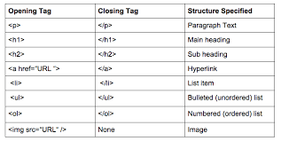

HTML e suas funcionalidades na contrução de sites
HTML
- A origem
- Como Funciona
- Estrutura
- Tags mais utilizadas
- Afinal, HTML é uma linguagem de programação?
- Outras Tags
A Origem
O HTML foi criado em 1991, porTim Berners-Lee, no CERN (European Council for Nuclear Research) na suíça. Inicialmente o HTML foi projetado para interligar instituições de pesquisa próximas, e compartilhar documentos com facilidade. Em 1992, foi liberada a biblioteca de desenvolvimento WWW ( World Wide Web)1, uma rede de alcance mundial, que junto com o HTML proporcionou o uso em escala mundial da WEB.
*1-Você pode saber mais sobre a Word wide Web aqui W3C
Como Funciona
O HTML é uma linguagem de marcação. Estas linguagens são constituídas de códigos que delimitam conteúdos específicos, segundo uma sintaxe própria. O HTML tem códigos para criar paginas na web. Estes códigos que definem o tipo de letra, qual o tamanho, cor, espaçamento, e vários outros aspectos do site. No início era muito complicado aprender HTML, pois eram muitos comandos para fazer algo simples. A cada nova versão, o HTML fica mais fácil de utilizar, e adquire mais funções. Atualmente qualquer pessoa pode acessar a internet a aprender a construir um site básico em questão de horas, seguindo os passos de tutoriais e aprendendo as funções de cada código.
O HTML foi a primeira linguagem de nível mundial, porem não é a única. Existem muitas outras linguagens destinadas á criação de paginas da web, porém o HTML ainda prevalece. Atualmente já é possível integrar varias linguagens na mesma pagina da Web, sendo possível usar duas ou mais linguagens no mesmo site.
Para criar e editar códigos em HTML é necessário qualquer editor de texto comum, como bloco de notas. Para testar os códigos, basta salvar o arquivo em formato ".HTML" e executar. Para o teste é necessário ter um navegador configurado como padrão. Não é necessária internet, pois o arquivo com os códigos esta na maquina onde esta sendo executado.
Estrutura
A maioria dos códigos em HTML precisam ter um código de inicialização e um de finalização - são as chamadas Tag's (tag de abertura e tag de fechamento).
Existem programas profissionais para criação de páginas em html automaticamente, como o Adobe Dreamweaver, entretanto, com o tempo o desenvolvedor precisará criar páginas complexas demais, sendo necessário ele mesmo digitar alguns códigos html.
Exemplo

Tags mais utilizadas

Afinal, HTML é uma linguagem de programação?
O HTML não é considerado uma linguagem de programação, já que ele não pode criar funcionalidades dinâmicas. Ao invés disso, com o HTML, os usuários podem criar e estruturar seções, parágrafos e links usando elementos, tags e atributos. Confira abaixo alguns dos usos mais comuns para o HTML:
- Desenvolvimento web: Os desenvolvedores usam códigos HTML para projetar como um navegador vai exibir os elementos das páginas, como textos, hiperlinks e arquivos de mídia.
- Navegação na internet: Os usuários podem navegar facilmente e inserir links entre páginas e sites relacionados, já que o HTML é amplamente usado para incorporar hiperlinks.
- Documentação:O HTML torna possível a organização e a formatação de documentos, de maneira similar ao Microsoft Word.
Outras Tags
- O elemento HTML "del": Elemento HTML de Texto Excluído, representa uma parte do texto que foi excluída de um documento. Este elemento é (não necessariamente) renderizado pelos navegadores com uma linha entre o texto.
- O elemento HTML "font":Define o tamanho da fonte, a cor e a face de seu conteúdo. Seu uso não é mais recomendado. Embora alguns navegadores ainda possam suportá-lo, ele pode já ter sido removido dos padrões da Web relevantes, pode estar em processo de eliminação ou pode ser mantido apenas para fins de compatibilidade. Evite usá-lo e atualize o código existente, se possível; consulte a tabela de compatibilidade na parte inferior desta página para orientar sua decisão. Esteja ciente de que esse recurso pode deixar de funcionar a qualquer momento.
- O elemento HTML "abbr": Representa uma abreviatura ou acrônimo. Ao incluir uma abreviação ou acrônimo, forneça uma expansão completa do termo em texto simples no primeiro uso, juntamente com o "abbr" para marcar a abreviação. Isso informa ao usuário o que a abreviação ou sigla significa. O atributo de título opcional pode fornecer uma expansão para a abreviação ou acrônimo quando uma expansão completa não estiver presente. Isso fornece uma dica aos agentes de usuário sobre como anunciar